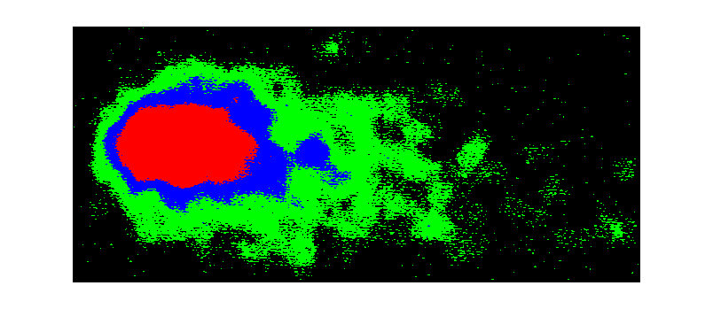

Contents
clear
clc
clear all
close all
Select Image and thresholding.
tic
FullFileName = ReadFile();
if FullFileName == 0
return;
end
f1 = imread(FullFileName);
g = rgb2gray(f1);
filtro = 'average';
f = imfilter(g,fspecial(filtro, 11));
subImage = f;
tsd = localthresh(f, ones(3),1,1.1,'global');
bwW = bwareaopen(tsd,5000);
bw = imclearborder(bwW);
Image regions and comets segmentation.
s = regionprops(bw, 'all');
s = GetComets(s);
box = cat(1, s.BoundingBox);
[boxLen col] = size(box);
centroids = cat(1, s.Centroid);
for p = 1 : boxLen
subImage = imcrop(g, (box(p,:)-1));
[m, n, c] = size(subImage);
[Patrones, Img] = ObtenerPatrones(subImage);
K-MEANS
[cidx, ctrs] = kmeans(Patrones, 4);
VectorBrillo = ctrs(:,1);
VectorBrilloOrd = sortrows(VectorBrillo,1);
img = uint8(zeros(m,n,3));
k = 1;
[pixels, rows] = size(cidx);
for i = 1 : m
for j = 1 : n
KCluster = cidx(k,1);
Clase = ObtenerKClase(KCluster, VectorBrillo, VectorBrilloOrd);
switch Clase
case 1
img(i,j,:) = [0 0 0];
case 2
img(i,j,:) = [0 255 0];
case 3
img(i,j,:) = [0 0 255];
case 4
img(i,j,:) = [255 0 0];
end
k=k+1;
end
end
figure('Name','K-MEANS CLUSTERING'),imshow(img);

FUZZY C-MEANS
opts = [nan;nan;nan;0];
[centers, U, obj_fcn] = fcm(Patrones, 4, opts);
Regiones = ObtenerRegiones(U, centers, m, n);
figure('Name','FUZZY C-MEANS CLUSTERING'),imshow(Regiones);
end
toc
# Solidity Symmetry Hratio CLD Area Valid
1 0.7588 0.3026 0.4516 0.0031 106594.00 Valid
Elapsed time is 34.159878 seconds.